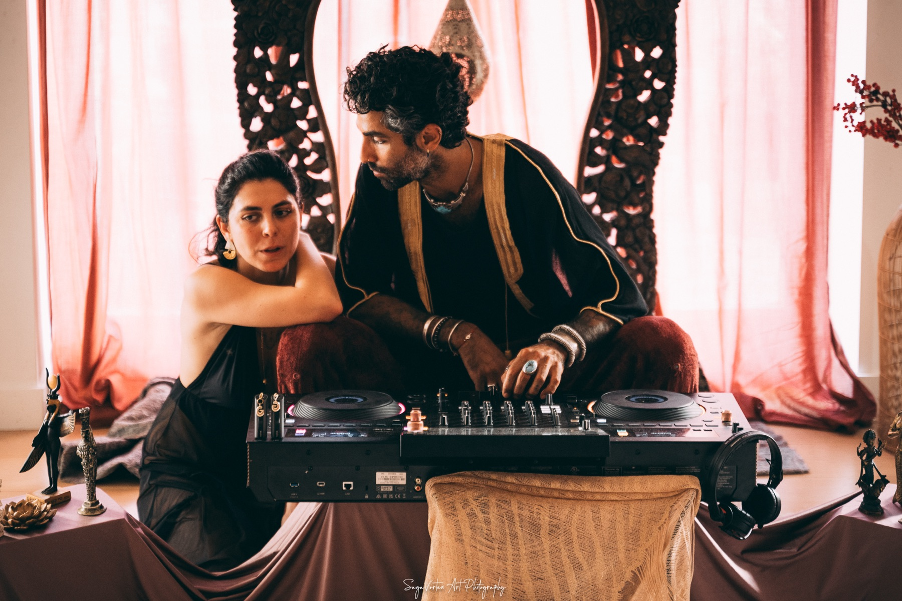

Life itself is the temple
This room is where we practice living that way.
The Part Nobody Names
The morning after temple. Something in you is still open, still humming, still closer to yourself than you have been in weeks. And there is nowhere to put it.
So you go back to work. You answer the messages. And by Wednesday it has become a nice memory of a night you had, instead of a change in how you live.
Or it goes the other way. Something old surfaced and did not close again. You left rawer than you arrived, with no one to say it to who would understand what happened in there.
Both are real. Both are the work. Neither is meant to be carried alone in a group chat that goes quiet after four days.
And you know the high. The days after, when a few of you keep messaging because nobody wants it to end, riding the wave as long as it holds.
I know that one from the inside. I have walked out of a night so expansive I could barely land, my field completely full of people and tribe and vibe, and then come home to my own flat and felt the loneliness arrive. Nothing had gone wrong. For one night I had the thing I actually want, and then it was over, and for days after I was still longing for that place.
This longing, it is so holy.
It is the body remembering what it is capable of. It is eros refusing to go back to sleep. It is the most honest thing in you, still reaching for something it already tasted once and has not agreed to forget.
Longing like that is asking to be answered. One night a month cannot answer it.
That is what integration actually is. Whatever moved in that room becomes how you live, or becomes a story you tell at dinner. The days afterwards decide it, and whether anybody is there for them.
Someone said this to me in a conversation about the tantra workshops and temples they had already done, word for word: "We do not do anything with what we learned in previous workshops." No matter how good the workshop, this is exactly what happens when there is nowhere to put it afterwards. And it seems to be happening every time.
Why Now
I have watched the same thing for years now. The same faces come back to the temple, month after month. They come back for the room. They come back for each other.
And, honestly, I am done pretending the temple is a series of events. It is a community that has been living without a home between the nights. The Living Temple™ is that home.
You already know these people. You have breathed with them, cried in front of them, been held by them, and then watched them walk out of the room and vanish until the next one.
What has been missing is the ordinary, unglamorous continuity that turns people you met once into people who know you. Someone who remembers what you said last time. Someone who notices when you go quiet.
So it opens on the autumn equinox, Tuesday 22 September, two days after Temple of Euphoria. You will walk out of that temple still humming, and two days later there is a room waiting for it, with the same people in it.
The equinox is the one day light and dark stand equal, and then the year tips inward. Everything that spent the summer growing outward starts coming home. Leaves let go.
That is exactly the season this room is built for. The gathering in. The going deeper.
These are the months everyone turns inward. The nights get long, the diaries get quiet, and people fold back into their own houses. Turning inward is right. Turning inward alone is where it gets heavy.
Starting now means your first season carries you through the darkest stretch of the year with people around you.
It begins Tuesday 22 September, two days after Temple of Euphoria, and runs to the winter solstice, where Erotic Descent & Soul Ascension is already waiting.
After that the doors stay open. You can join in any month, and your first season is always your own three months from the day you walk in. Join in November and your season runs November, December, January.
I do not know anyone else in Amsterdam, or in Europe, or anywhere really, doing this. There are temples, and there are trainings, and there is nothing that holds the people in between. That gap is the whole reason this exists.
The Shape Of It
A membership. Part online, part in a room together, every month: one call, one gathering, the sacred feminine temple, and the Inner Circle Temple, for members only.
The Living Temple™ is the place you belong to between the temple nights. It takes what moves in that room and lets it keep living in the days that follow.
And it deepens, because the people stay. You learn each other’s stories. You see the tender places nobody brings to a first meeting. You start noticing when someone has gone quiet, and they start noticing you. That is what a community is. The rest is a guest list.
When that anchors, the temple nights change too. You walk into a room where people already know you, and the work goes further because nobody is starting from the beginning. The temple becomes the sacred playground it was always meant to be, and everything you have been integrating between the nights lands there, deeper than it ever could on a first visit.
A temple night moves something. Sometimes in the body. Sometimes in the mind, the heart, or somewhere further in that you have no word for. An opening, a contraction, a shift you only recognise weeks later. Whatever moved keeps moving for days. This is where it gets to keep going.
And it is a permission field, the same one you stood in at temple, simply kept alive. A room where you meet yourself, meet each other, and together meet Life, God, spirit, whatever word you use, more fully and more deeply than one evening a month can hold.
The name is literal. Life itself is the temple. The world keeps asking you to choose: sacred or ordinary, open or functional, Saturday night or Monday morning. This room refuses the choice.
Words From People Who Keep Coming Back
I want to give you my compliments for your temple, especially after visiting Awaken as Love, one of the biggest tantra festivals out there. For me, I still had my best temple experiences with you. And it's not just me: friends of mine who've been in this field a lot longer than I have speak highly of you too.
So many times at temple nights it feels like the facilitator is performing. With Sandi it feels completely different: warm, real, embodied, and deeply human.
Facilitator and spaceholder, Ubud
The Real Question
The temple crowd. The ones you recognise across a candlelit room and know beyond the small talk and the roles of their everyday lives.
You know how they breathe. You know what their face does when something lands. You have never needed a surname, a job title, or any of the things the rest of the world introduces people by. You met each other somewhere underneath all that, and it turns out that is the part worth knowing.
People who came for the night and stayed for the people. Who are tired of holding a version of themselves together and want somewhere to put the whole thing down. Who want depth without dogma, eros without agenda, and a room where being entirely yourself is the starting point rather than the achievement.
These are the ones who want what sits underneath the high. A tribe. A vibe. Somewhere to belong in the middle of a grey November week.
And it is not all gravity. Some of the best hours in this room are the silly ones: tea going cold while somebody tells a story badly, the laughing that arrives right after the crying, plans made for a swim nobody ends up going to. Depth and joy live in the same house here. They always did.
I will tell you where I stand in this, because it is not neutral. At this point in my life almost every one of my closest people came out of this crowd. My friends. My lovers. The team and the spaceholders who hold my events with me. The ones who show up when something breaks at midnight. From the outside it probably looks like I live in a bubble. I chose it on purpose, and I would choose it again tomorrow.
Because this is what a community actually hands you. Shared values, so you can start a sentence in the middle and still be understood. People who mirror you back, sometimes gently and sometimes in fierce love. And you walk out into the ordinary world knowing you are not the only one who sees it this way.
And yes, people find each other in here. Friendships, lovers, whole chapters. I stopped being surprised by that years ago ;)
And so you know the shape of it:
You have breathed with these people, cried in front of them, been held by them. This is the room that keeps them.
The space felt safe, warm, and deeply connected. I would join again in a heartbeat. I love Sandi, and I love this tribe.
How We Hold Each Other
Nothing is forced. Nothing is expected. Everything is optional. Your yes and your no are both honoured. That is true in the temple, and it is true here, on a Tuesday, on a call, in a kitchen full of cacao.
You should know exactly what you are walking into, and who is keeping it that way. The answer is all of us, out loud, together.
If you have stood in my temple you have already spoken these, one for each element. They do not stop at the door. They are what holds this room too.
And two more, because this room keeps going after the night ends:
These are kept, not just agreed. If someone breaks them their membership ends, because your safety in this room will always matter more to me than anyone’s comfort about being asked to leave.
The Rhythm
The Tuesday after the temple, 19:00 to 20:30 CET, while it is still alive in the body. Everyone, together, online
19:00 to 20:30 CETTwo weeks after the integration call, cosy and intimate. Often a community cacao gathering in Amsterdam, and on warmer days a potluck picnic or a shared meal out together
IncludedOnce every three months, so your first season will almost always hold one. A half day working one archetype and one element at a time, in person in Amsterdam. €88 on its own. Yours as part of this room
IncludedTwice a year. Small, never listed anywhere. Ticketed like any temple, and only members are ever invited
Members onlyA private group where the conversation keeps going between the calls. Ask, share, arrange a coffee, land after a heavy night
IncludedEvery temple night, workshop and gathering opens to this room before it goes public. Same price, two days early, so you are never the one who missed it
IncludedOne call and one gathering every month, one sacred feminine temple each season, ongoing. Come to what you can.
This room runs on temple cycles. The temple lands at the end of the month, the call catches you days later, the gathering and the circle carry you to the next one. This first season opens on the equinox with a ritual in the first call and carries through to the solstice. After that the wheel simply keeps turning. Whenever you arrive, your first season is your own three months from that day.
The First Season
The temple nights stay separate, and members get first access to every seat before it goes public. Come every month if you can. That is where the deepest work happens, and the Tuesday call is a different room entirely when the people on it were all in the same temple three days before. See what is coming up.
And the call is not a closed cohort. Whoever is in the membership that month is on it, whichever temple first brought them in. It is a living room with the lights on.
Dates may breathe a little. The rhythm does not.

Temple lands at the end of the month. The call catches you days later. The gathering and the temple carry you to the next one.
Your first season is three months from the day you join, whenever that is. Three months, because that is what turns a group of people who keep meeting into a community that actually knows each other. After that it runs month to month, for as long as you want it. Cancel whenever you like and it ends from the following month.
Here is the arithmetic, plainly. €198 for your first three months is €66 a month. A single temple night costs nearly double that.
For that: the monthly call, the gathering, the sacred feminine temple that sells for €88 on its own, the Inner Circle Temple that never goes public, the members’ chat, and first access to every seat before anyone else sees it. Come to one thing a month and it has already paid for itself.
Life gets busy. Whenever you come back, you will be welcomed with open arms and an open heart.
You're a star facilitator. I do professional theatre and conduct workshops on facilitation and public speaking, you're a natural.
Three-time temple attendee
I signed up for all the next events, because she became my fav. Teacher!
The Days Afterwards
Every one of these was written in the days after, by someone still inside it. Read them as the question this room exists to answer.
This experience softened layers in me that I didn't even realize I was holding. The next day I found myself relating from a much softer, more surrendered, and more heart-open space.
It is day 3 after the weekend and my body is still on fire. From the moment I wake up, I am experiencing waves of explosive energy, followed by episodes of calm relaxation.
Some of the feelings from the temple still very much remain.
Four days later, from a work trip
The Keeper of the Room
I’m Sandi. I arrived to this work through embodiment. Through living in my body. Through crossing thresholds. Through long nights of truth, often in deep surrender on my knees.
In 2018 I sat with Kambô just before my first Ayahuasca ceremony, and that encounter changed everything. It spoke to my body. It cleared something ancient. It gave me back an inner authority I had forgotten. I didn’t decide to work with medicine. I was called.
What the medicine opened, eros carried the rest of the way. Tantra and temple taught me what to do once I was living in my body: how to want without apologising, how to be touched without bracing, how to hold reverence and pleasure in the same hand. Erotic sovereignty, and underneath it something rarer, erotic innocence, and aliveness.
For a long time I wore a fierce mask. It was my power and my survival, and it was quietly eating my feminine. Temple arts is where I met a sensual, confident version of myself I did not know yet. And then something turned: I could walk into a room of eighty strangers with my heart open and my chin up. Because I belonged. To the room, to the community, to myself. To my eros.
Tantra and temple changed my life, and that embodiment changed how I temple. I have held temple in Amsterdam every month for years now.
What I know how to do is hold a room. How to listen. How to pace truth. How to meet someone in the moment they get vulnerable, and not rush it. That is what I bring here, except here it does not end when the candles go out.
What I care about most is the rest of your week. Whether you move through it as the whole of yourself, instead of shrinking into the version of you that is easier for everyone else. That is the work. Everything else is scheduling.
This room is where we practice living that way.
Whether This Is Yours
If you have been quietly looking for somewhere to belong, this is it.
If temple has become a practice rather than a night out. If you keep coming back and want somewhere for it to go. If you are tired of the thing that opens on a Saturday closing again by Wednesday, with nobody to say it to.
If what you actually want is the in-between. Bringing that sacredness home with you and living the temple for real, on a Tuesday, in your kitchen, with the people who were on the floor beside you.
If what you want is a tribe. Cosy gatherings where you get to deepen and laugh and be entirely yourself, outside of any event. People who know your name and your edge, who notice when you go quiet, and who keep the temple alive in you on the ordinary days between the nights.
If you want somewhere that keeps asking the one question worth living: who are you, underneath all of it, and what would it take to become that on a Wednesday.
Becoming who you truly are is the work of a lifetime. It is much harder to do alone, and nobody ever tells you that part.
Then you already know. Your body answered before you finished reading.
Straight Answers
No. Temple tickets are separate and always your choice. The monthly call works whether you were in the last temple or not: what moves in that room is the same work, and everyone can relate. You will just hear it in other voices that month.
Come to one of my temple nights first. That is the one firm rule of this room, and it is specific: a Medicine Within temple, not any temple. Everyone inside has stood in the same field with me at least once, so nobody is ever explaining it from zero. The next one is Temple of Euphoria on September 20th. That is a not yet. The door stays open.
Both, and neither. It is a mixed room: some arrive partnered, some single, some somewhere in between that has no clean word. And yes, people do meet here. That is welcome. What holds it is the agreements, consent first every time, and nobody messages anybody who has not said yes to it.
You miss it, and nothing is taken from you. There is a recording, and it stays inside the room. This is a circle. What people say on that call stays on that call, and a replay would break the first agreement we make. The room is still there next month.
Yes. Your first season is three months from the day you join, and after that it runs month to month. Send me a message at any point and your membership ends from the following month, so you are never cut off partway through one you have paid for. No conversation required, and the door stays open if you want to come back.
So are half the people in the room, including some who have been coming for years. You are allowed to arrive quiet and stay quiet. Nobody is called on, nothing is forced, and listening is a full way of being here. Most people tell me the same thing: shy for the first while, and then it melts on its own. Take the time it takes.
Come as you are. This room exists for real seasons, not for your best one. Some months you will arrive full and overflowing. Some months you will arrive tired, with nothing to give, still healing something. Both belong here. You do not have to be healed to be in this room. You have to be honest. That is all.
It happens, and it is handled. What is said in the circle stays in the circle. Every member agrees to that in writing, and breaking it ends a membership, no exceptions. Nobody, including me, will ever confirm to anyone outside the room who is inside it. If this is a live concern for you, name it in your welcome questions and we will talk.

Life itself is the temple. This is where we practice living that way, together, on the ordinary days.